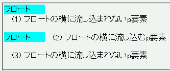

一度clearプロパティでnone以外の値を指定した要素は、より後にあるセレクタやより優先度の高いセレクタで clear: none; を指定したとしても値を上書きすることができない。
<style type="text/css">
p {
clear: left;
}
p.noclear {
clear: none;
}
</style>
<div style="width:5em; float:left; background:aqua;">フロート</div>
<p>(1) フロートの横に流し込まれないp要素</p>
<div style="width:5em; float:left; background:aqua;">フロート</div>
<p class="noclear">(2) フロートの横に流し込むp要素</p>
<p>(3) フロートの横に流し込まれないp要素</p>
(1) フロートの横に流し込まれないp要素
(2) フロートの横に流し込むp要素
(3) フロートの横に流し込まれないp要素
1番目と3番目のp要素内の文字列はフロートの右側に回り込まず、2番目のp要素内の文字列はフロートの右側に回りこむはずです。
N7.02での表示
このバグについては以下の文書を参照してください。
Safari1.0でこの不具合が発生するそうです。